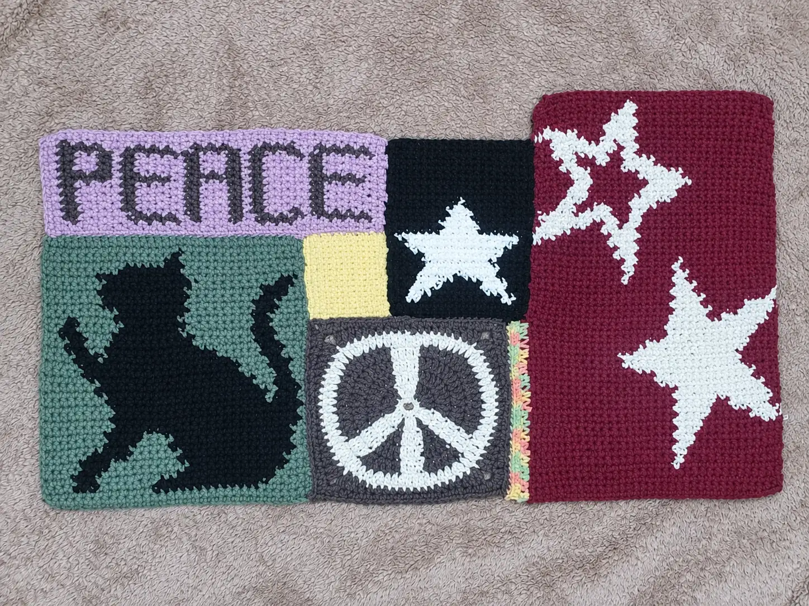

가이드 › 도트뜨개로 만든 연습장
도트뜨개로 만든 연습장
연습해본 편물을 이어붙인거에요 ㅎㅎ
실은 거의 다 착하면을 사용했어요.

도트뜨개에서 만든 도안으로 뜬 조각은 PEACE 글자, 검은 고양이, 검은 바탕의 흰 별, 빨간 바탕의 별 두 개입니다.
도안 열어보기: 별 (19×19) · 별 두 개 (37×60) · PEACE 글자 · 검은 고양이
가운데 피스 사인 조각은 Sirin's Crochet 님의 "Crochet Simple Peace Sign Granny Square" 영상을 보고 떴습니다.
영상 보기
노란 조각과 알록달록한 띠는 조각들을 잇기 위해 중간에 넣은 것입니다.